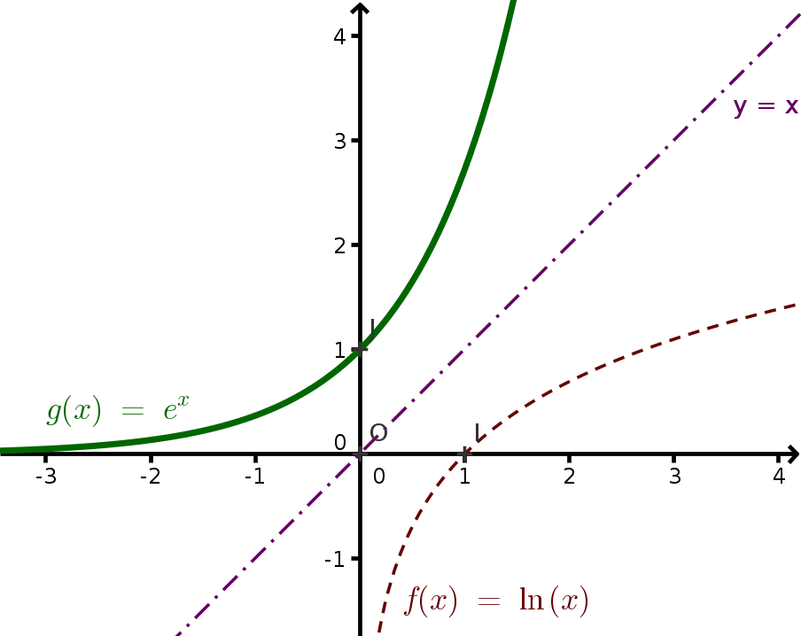

Convexité, Exp, Ln - Cours
Fonction logarithme
Définition
On appelle \(\ln\)
(logarithme népérien ou naturel) la fonction définie
sur \(\mathbb{R}_+^*=\left]0;+\infty\right[\) qui est une primitive de la fonction inverse
\(\frac{1}{x}\) et qui a pour valeur 0 en \(x=1\).
On a ainsi : \(\ln x = \displaystyle\int_1^x\,\dfrac{1}{t}\,\textrm{d}t\)
Courbe, variation, signe

- \(\ln\) est strictement croissante et croît lentement vers \(+\infty\) ;
- 0 est valeur interdite et \((Oy)\) est asymptote (verticale) à la courbe de \(\ln\) : les valeurs de \(\ln\) tendent vers \(-\infty\) pour \(x\) proche de 0 ;
- Attention : \(\ln x<0\) lorsque \(0<x<1\).
On note \(\textrm{e}\) le nombre dont l'image par \(\ln\) est 1.
\(\textrm{e}\approx2,718\,281\,828\,46\) est une constante mathématique (du même type que \(\pi\)).
Dérivation et \(\ln\)
On a par définition, pour tout \(x>0\), \(\displaystyle\left(\ln x\right)'=\dfrac{1}{x}\)
(admise) Si \(u\) est une fonction dérivable à valeurs strictement positives, on a :
\(\displaystyle\left(\ln u\right)'=\dfrac{u'}{u}\)
Calculer les dérivées des fonctions suivantes : \(f(x)=\ln(1+x^2)\) et
\(g(x)=\ln\left(1+\dfrac{1}{x}\right)\)}
Trouver les valeurs adéquates des réel \(a\) et \(b\) pour que \(F(x)=ax+bx\ln x\) soit une
primitive de \(\ln\).
Trouver une primitive de la fonction inverse sur \(\mathbb{R}_-\). Peut-on construire une
primitive de la fonction inverse sur \(\mathbb{R}^*\) ?
Opérations et \(\ln\)
La fonction \(\ln\) transforme les produits en somme et les quotients en différences : si \(a,b>0\) et
\(n\)
est
un entier :
- \(\ln(ab)=\ln a+ \ln b\)
- \(\ln\left(\frac{1}{a}\right)=-\ln a\)
- \(\ln\left(\frac{a}{b}\right)=\ln a-\ln b\)
- \(\ln\left(a^n\right)=n\ln a\), en particulier \(\ln\left(\textrm{e}^n\right)=n\)
- \(\ln\left(\sqrt{a}\right)=\frac{1}{2}\ln a\)
!!!
D'après la propriété précédente, on a :
\(\ln(12)=\ln(2^2\times 3)=\ln 2^2 +\ln 3=2\ln2+\ln3\)Exprimer en fonction de \(\ln2\) et \(\ln3\) les nombres suivants :
\(\ln\left(\frac{32}{9}\right)\)~~;~~\(\ln\left(\sqrt{6}\right)\)~~;~~\(\ln\left(\frac{1}{6}\right)\)
\(\ln\left(\frac{32}{9}\right)\)~~;~~\(\ln\left(\sqrt{6}\right)\)~~;~~\(\ln\left(\frac{1}{6}\right)\)
Démontrer la propriété précédente ; pour le premier item, on pourra dériver \(\ln(ax)\).
Démontrer que \(\displaystyle\lim_{x\to+\infty}\ln x = +\infty\) et que
\(\displaystyle\lim_{x\to0^-}\ln x=-\infty\).
Attention aux erreurs ! :
- \(\ln (a+b)\neq \ln a+\ln b\)
- Toute expression à l'intérieur d'un \(\ln\) doit être positive.
Déterminer l'ensemble de définition de : \(f(x)=\ln(1-x)\) et
\(g(x)=\ln\left(1-x^2\right)\)
Limites usuelles
- \(\displaystyle\lim_{x\to+\infty} \dfrac{\ln x}{x}=0^+\)
- \(\displaystyle\lim_{x\to0^+} x\ln x=0^-\)
- \(\displaystyle\lim_{x\to0} \dfrac{\ln (1+x)}{x}=1\)
- \(\displaystyle\lim_{x\to+\infty} x-\ln x=+\infty\)
Démontrer ces limites ; pour le premier item, on pourra étudier la fonction
\(f(x)=\dfrac{\ln x}{x}\) et poser \(x=\textrm{e}^n\) pour \(n\in\mathbb{N}^*\) ; pour le second, poser
\(x=\dfrac{1}{t}\)
;
pour le troisième, penser que \(\ln\) est dérivable en 1.
Calculer :
\dfrac{\ln x}{x^2+1}\)
- \(\displaystyle\lim_{x\to+\infty
\(\log\) : le logarithme décimal
Pour \(x>0\), on note
\(\log x = \dfrac{\ln x}{\ln 10}\)

!!!
\(\log\) possède les mêmes propriétés que \(\ln\) en terme de variation, signe, limites et calcul, sauf pour
la
propriété \(\ln\left(\textrm{e}^n\right)=n\) qui se traduit en \(\log \left(10^n\right)=n\) : on dit que le
\(\log\) (décimal) a \(10\) pour base, alors que \(\ln\) a \(\e\) pour base.
!!!
Ainsi, un nombre dont \(\log\) vaut environ \(2,223\) est compris entre \(10^2=100\) et \(10^3=1000\).
!!!
En informatique, on utilise le log binaire \(\log_2 x =\frac{\ln x}{\ln 2}\) ; un nombre dont le \(\log_2\)
vaut
environ \(7,5\) doit être codé sur \(8\) bits (\(8\) caractères zéro ou un).
Plus généralement, on peut construire le \(\log_a\) (logarithme de base \(a\)) en posant \(\log_a x = \frac{\ln x}{\ln a}\). De même, si \(n\) est l'entier immédiatement inférieur à \(\log_a x\), alors \(a^n
Le pH d’une solution aqueuse est défini par la relation \(\displaystylepH = - \log[H_3O^+]\) où \([H_3O^+]\) désigne la concentration en ions \(H_3O^+\) (en mol/L). On a toujours \(0 \leq pH \leq 14\).
- Calculer le pH d’une solution dont \([H_3O^+] = 4,0 \times 10^{-5 \) mol/L.
- Que devient le pH quand la concentration en ions \(H_3O^+\) est divisée par 10 ? Par 100 ?
- Que devient la concentration quand le pH diminue de 1 ? De 2 ?
Expliquer comment utiliser \(\log\) pour trouver le nombre de chiffres d’un nombre entier ;
avec combien de chiffres s’écrit le nombre \(1515^{1789
\) ?}Fonction exponentielle
Définition, courbe et premières propriétés
Pour \(x\) nombre réel quelconque, en notant \(\textrm{e
^x\) le nombre dont le
\(\ln\) vaut \(x\), on construit la fonction exponentielle \(\exp\), qui est la fonction
réciproque de \(\ln\).}
!!!
Les conséquence directes sont :
- \(\exp(x)=\textrm{e}^x\) est définie pour tout \(x\) réel ;
- \(\exp(0)=\textrm{e}^0=1\) et \(\exp(1)=\textrm{e}^1=\e\approx2,7\) ;
- Pour \(y>0\) et \(x\) quelconque, \(y=e^x~\Leftrightarrow~x=\ln y\)
- \(\exp\) est strictement croissante, tend vers \(0\) en \(-\infty\) (\((Ox)\) est donc asymptote en \(-\infty\)) et tend très rapidement vers \(+\infty\) en \(+\infty\).
- \(\exp\) est dérivable sur \(\mathbb{R}\) : sa courbe admet des tangentes en tout point puisqu'il
en est de même pour celle de \(\ln\) et qu'aucune des tangentes à la courbe de \(\ln\) n'est
horizontale.
Résoudre les (in)équations suivantes :
\(e^{x-1
=2\)~~;~~\(e^x
\(e^{x-1
Opérations et \(\exp\)
!!!
\(\exp\) agit à l'inverse de \(\ln\) : la fonction \(\exp\) transforme les sommes et produits et les
différences en quotients.
Pour \(a,b\) réels et \(n\) entier :
- \(\textrm{e}^a\times\textrm{e}^b=\textrm{e}^{a+b}\)
- \(\displaystyle\frac{1}{\textrm{e}^a}=\textrm{e}^{-a}\)
- \(\displaystyle\frac{\textrm{e}^a}{\textrm{e}^b}=\textrm{e}^{a-b}\)
- \(\left(\textrm{e}^a\right)^n=\textrm{e}^{an}\)
Simplifier :
\(A=\frac{\textrm{e
^7}{\textrm{e}^5}\)~~;~~\(B=\textrm{e}^{x-2}\textrm{e}^{2-x}\)~~;~~\(C=\textrm{e}^x\textrm{e}^{-x}\)}
\(A=\frac{\textrm{e
Dérivation et \(\exp\)
!!!
Pour tout \(x\in\mathbb{R}\) :
\(\displaystyle\left(\textrm{e}^x\right)'=\textrm{e}^x\)
Le démontrer en dérivant (in)directement \(\ln\left(\textrm{e
^x\right)\).}
!!!
(admise) si \(u\) est une fonction dérivable :
\(\displaystyle\left(\textrm{e}^u\right)'=u'\textrm{e}^u\)
Calculer les dérivées des fonctions suivantes :
\(f(x)=\textrm{e
^{1-x^2}\) et \(g(x)=(1-x)\textrm{e}^{-5x}\)}Trouver une primitive des fonctions suivantes :
\(f(x)=x\textrm{e
^{-x^2}\) et \(g(x)=(x+1)\textrm{e}^x\) (sous la forme
\((ax+b)\textrm{e}^x\)).}\(f\) et \(g\) sont deux fonctions définies sur \(\mathbb{R
\) qui vérifient :\(f'=f\) et \(g'=g\) et \(f(0)=g(0)=1\).
- En dérivant \(g(x)g(-x)\), établir que \(g\) ne s'annule pas sur \(\mathbb{R}\). En déduire que \(g>0\) sur \(\mathbb{R}\).
- En dérivant \(\dfrac{f}{g}\), établir que \(f=g\).
- Que dire d'une fonction égale à sa dérivée et qui vaut \(1\) quand \(x=0\) ? Et si l'on ommet la dernière condition ?
Limites usuelles
!!!
- \(\displaystyle\lim_{x\to+\infty} \dfrac{\textrm{e}^x}{x}=+\infty\)
- \(\displaystyle\lim_{x\to-\infty} x\textrm{e}^x=0^-\)
- \(\displaystyle\lim_{x\to0} \dfrac{\textrm{e}^x-1}{x}=1\)
Démontrer ces limites ; on pourra poser \(x=\ln t\).
Calculer :
\dfrac{\textrm{e}^x+1}{x^2+1}\)
- \(\displaystyle\lim_{x\to+\infty
Notation puissance réelle
On étend la notation puissance (jusqu'alors utilisée pour des exposants entiers relatifs)
en posant, pour \(a>0\) et \(b\) réel : \(a^b=\textrm{e
^{b\ln a}\).}Étudier \(f(x)=x^x\) et
\(g(x)=\left(1+\dfrac{1
{x}\right)^x\).}
\(g(x)=\left(1+\dfrac{1
Fonctions exponentielles de base \(a\)
\vspace{-4mm}
!!!
Soit \(a>1\) fixé et \(x\) réel (variable). En posant \(a^x=\textrm{e^{x\ln a}\) on définit les fonctions
exponentielles de base \(a\) pour un exposant réel quelconque.}
!!!
Elles sont les réciproques des fonctions logarithmes de base \(a\). En particulier, \(x\mapsto 10^x\) est la
réciproque de \(\log\).
!!!

En accoustique :
\footnotesize Le niveau sonore \(N\) (en décibels : dB) est : \(N=20\log\left(\dfrac{p
{p_0}\right)\)
où \(p\) est la pression (en Pa) correspondant au son mesuré
et \(p_0\) une valeur de référence (on prend dans la plupart des
cas le seuil d’audibilité d’un son par une oreille humaine qui
correspond à 20 \(\mu\)Pa).
\footnotesize Le niveau sonore \(N\) (en décibels : dB) est : \(N=20\log\left(\dfrac{p
- Dans la rue, je passe à 5m d’un marteau-piqueur (100 dB) et à 2 m d’un joueur de vuvuzela (110 dB). Ai-je mal (seuil de la douleur : 120 dB) ?
- Deux élèves qui chuchotent émettent 32 dB. Calculer combien de dB émettent 34 élèves qui chuchotent ; comparer à la voix du professeur (58 dB).
Fonctions puissances (réelles)
\vspace{-4mm}
!!!
Soit \(p\) réel fixé et \(x>0\) (variable). En posant \(x^p=\textrm{e^{p\ln x}\) on définit les fonctions
puissance \(p\) (\(p\) réel quelconque).}
!!!
!!!
La fonction réciproque de la fonction \(x\mapsto x^p\) est \(x\mapsto x^{\frac{1\) est en fait la
fonction puissance un tiers, réciproque de la fonction cube.